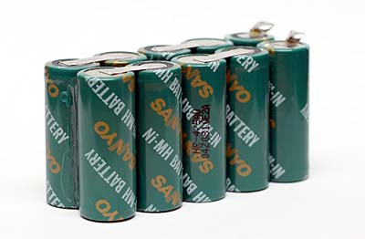
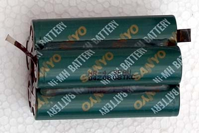

Batterie & energia
Ni-Mh FAST BATTERY CHARGER
Carica batteria automatico per 1-10 elementi "Fai da te" di R.Chirio
Indice della pagina
Aprile 2009
Dalle molte richieste per un carica batteria efficace per Ni-Mh, ho elaborato questo progetto che soddisfa tutti gli utilizzatore di batterie ricaricabili Ni-Mh.
Lo schema permette la ricarica di tutte le tipologie di batterie Ni-Mh, la corrente di ricarica è regolabile da 0 a 3 (5)A tramite un potenziometro.
La caratteristica importante è lo stacco a fine carica, che avviene quando le batterie iniziano a scaldare, quando cioè sono cariche. Il relè stacca l'alimentazione principale e le batterie rimangono isolate tramite il diodo che evita la scarica.
Per migliorare il rendimento del generatore a corrente costante è stata usata una configurazione switching che lavora a 260 kHz, con rendimenti oltre il 90%.

- La batteria Sanyo Ni-Mh da 2100mAh 1,2V tipo HR-4/5FAU
- scarica Data Sheet
- E' caratterizzata da una alta affidabilità, usata per alimentare led P4 nella configurazione 12V.

- La batteria Sanyo Ni-Mh da 4500mAh 1,2V tipo HR-4/3FAU
- scarica Data Sheet (sanyo_HR-43FAU.pdf) 470Kb
- E' caratterizzata da una alta affidabilità, usata per alimentare led P7 nella configurazione 12V.
Per info contattare: info@chirio.com
SCHEMA ELETTRICO
{kind=link}
Descrizione circuito
Alimentazione con ingresso 220V 50 Hz tramite trasformatore T1. Il secondario del trasformatore deve essere dimensionato in base alla massima corrente che si vuole ottenere, con 3A massimi basta un 50-60VA con uscita 16-18V, per avere 5 A in uscita con servizio continuo dobbiamo avere una potenza di almeno 75-100VA. Un ponte diodi D2 da 4400mA 80V o maggiore, raddrizza l'alternata e il condensatore C1 da 4700uF ha il compito di filtrare e livellare. - La sezione 220V può essere sostituita da un alimentatore per notebook da 19-21V 3/5A collegare l'uscita ai capi del C1.
Il pulsante S1 serve a dare alimentazione. Se le condizioni di temperatura batteria sono inferiori a 30°C il relè si chiude e dà alimentazione al circuito di ricarica, se la batteria è calda il sistema si spegne o non viene alimentato. Chiaramente il termistore R12 deve essere posizionato sotto le batterie in ricarica o meglio dentro al pacco e collegato al connettore di ricarica. Oppure, utilizzare una fascetta in velcro per fissare il termistore sul corpo del pacco in ricarica.
Il circuito di protezione termica prende alimentazione dall'uscita del ponte raddrizzante e attraverso il regolatore LM7812 otteniamo la tensione di 12V necessaria a comandare il relè. Durante il funzionamento, il RLY1 è normalmente chiuso. Il trimmer R2 deve essere tarato per fare aprire il relè per temperature superiori ai 30-40° da misurare sul corpo batteria.
L'integrato U2 LM317 ha il compito di fornire la corrente costante per il potenziometro della regolazione di corrente, ai capi del potenziometro ci deve essere una tensione di 1,25-1,30V
L'integrato U3 LM2678T-ADJ deve essere montato su radiatore, normalmente lavora a tensione costante, con questa configurazione otteniamo invece una regolazione molto precisa della corrente in uscita. Attenzione che la tensione a vuoto corrisponde a quella del C1 pari a 26-30V.
La resistenza R4 determina la massima corrente in uscita, il suo valore è dato da 1,25/Imax nel caso di 5A avremo un valore di 0,25 Ohm non è un valore commerciale, ma è facilmente ottenibile con il parallelo di 4 resistenze da 1ohm 2W.
Il diodo D5 deve essere del tipo Schottky, per 3A va bene un MBR340, mentre per 5A usare un MBR745 o similari.
La bobina L1 è stata realizzata su nuclei verdi/blu diam. 12,70mm avvolgendo 25 spire filo diam. 0,55mm
Con il potenziometro R3 possiamo regolare la corrente da un minimo di 10mA a un massimo di 5A, la regolazione è molto precisa e stabile. Occorre avere un amperometro in uscita per posizionare con precisione il valore di corrente che ci serve. Consiglio di montare una manopola con indice e scrivere i valori di riferimento.
Quando le batterie sono cariche, iniziano a scaldare, pertanto il sensore termico (R12) deve essere posizionato sotto al pacco batterie. Se la temperatura supera la soglia di taratura, il carica batteria si spegne automaticamente. Il diodo D4 di tipo normale da 10A evita che la tensione di batteria ritorni dentro al LM2678, danneggiandolo.
La resistenza NTC R12 deve essere saldata su un cavetto e posizionata direttamente sul corpo degli accumulatori sotto carica.
FOTO DELLA REALIZZAZIONE IN ARRIVO
Conclusioni
- Il sistema è molto efficace ed utile per la ricarica veloce di qualsiasi tipologia di batterie Ni-Mh.
- La configurazione a switching scalda poco e permette di ottenere un regolatore potente con piccole dimensioni.
- Il carica batteria deve essere avviato con gli accumulatori già collegati, altrimenti c'è rischio di rovinare i piccoli accumulatori dalla scarica del C3 che a vuoto prende anche 30V generando una forte scarica di CC.
- Si consiglia vivamente di non superare le massime correnti consigliate dal costruttore, in quanto le batterie potrebbero anche scoppiare. importante verificare la funzionalità del termistore che rappresenta lo stacco automatico della batteria in mancanza della nostra presenza.
per info contattare: info@chirio.com
© Roberto Chirio: all rights reserved.